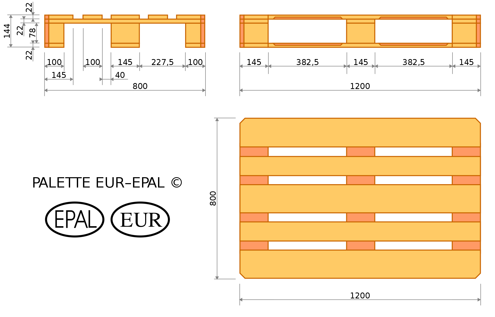
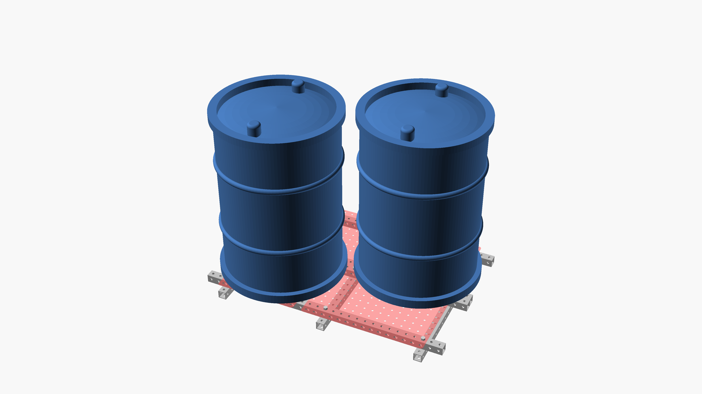

pallets revision 5013
^ Projects infobox ^^
| image | Pallet.scad.png |
| designer | [[user:tim|Timothy Schmidt]] |
| date | 2021 |
| tools | [[wrenches|Wrenches]] |
| parts | [[frames|Frames]], [[end_caps|End caps]], [[bolts|Bolts]], [[nuts|Nuts]], [[plates|Plates]] |
| techniques | [[shelf_joints|Shelf joints]], [[tri_joints|Tri joints]] |
| git | |
| stl | |
Introduction
A pallet (also called a skid) is a flat transport structure, which supports goods in a stable fashion while being lifted by a forklift, a pallet jack, front loader, or crane. A pallet is the structural foundation of a unit load which allows handling and storage efficiencies. Goods or shipping containers are often placed on a pallet secured with strapping, stretch wrap or shrink wrap and shipped. Since its invention in the twentieth century, its use has dramatically supplanted older forms of crating like the wooden box and the wooden barrel, as it works well with modern packaging like corrugated boxes and intermodal containers commonly used for bulk shipping.
Challenges
30 and 20 hole frames fit EUR pallet specifications for width and depth well. Allowing for vertical frames to complete tri-joints at the corners makes skinning the top of the pallet completely a challenge. Using shelf joints may be possible.
Approaches
Build pallets from standard Replimat components.



